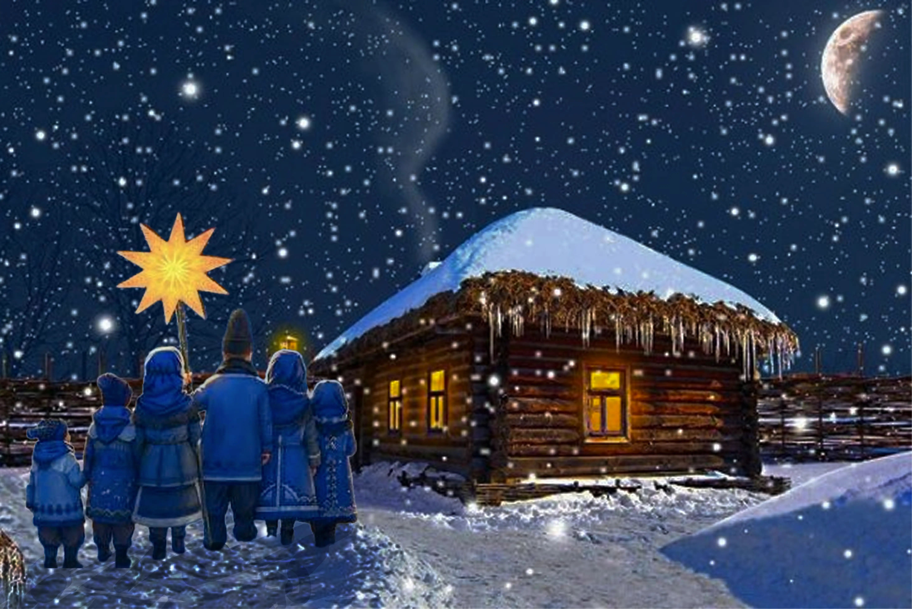
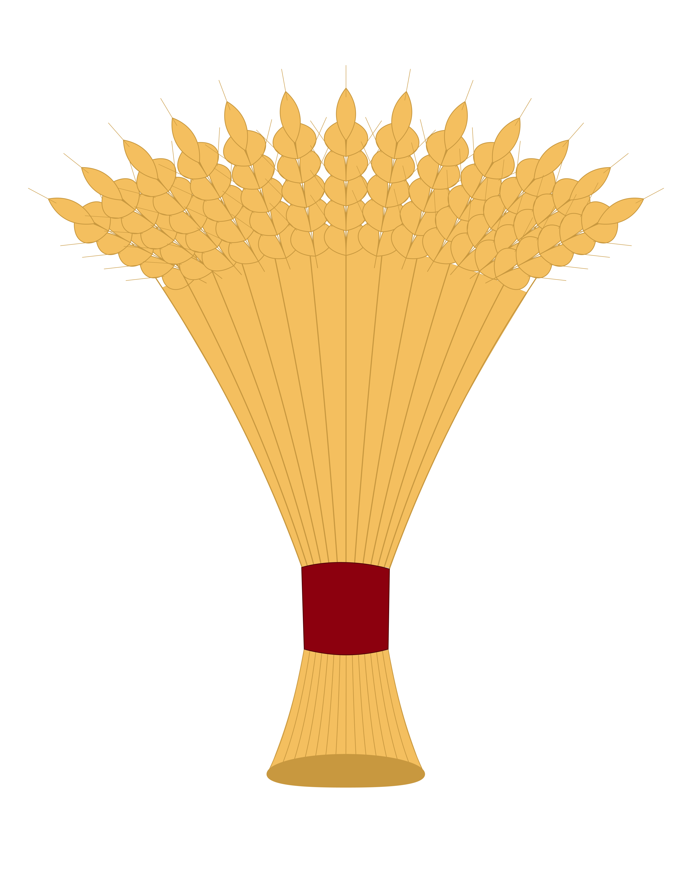
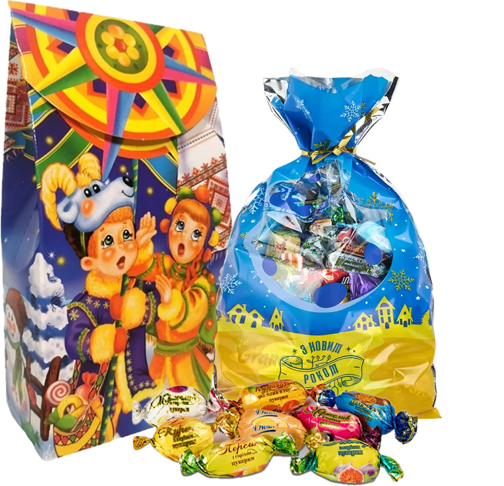

Різдвяні традиції Вінниччини
Різдво на Вінниччині - це особливий час, коли родини збираються разом, а давні звичаї оживають у колядках, святкових обрядах і щирих побажаннях.
Вінниччина є частиною історичного Поділля, де різдвяні традиції поєднують християнську символіку з народними звичаями. Вони передаються від старших поколінь до молодших і залишаються важливою частиною культурної спадщини краю.
Колядування
Колядування - один із найвідоміших різдвяних звичаїв України. Під час свят колядники відвідують оселі, співають обрядові пісні та бажають господарям здоров'я, щастя, миру й достатку.
На Вінниччині колядування є важливою частиною святкової атмосфери. Колядники можуть нести різдвяну зірку, а господарі дякують їм за добрі побажання та пригощають гостинцями.

Дідух - символ родинного добробуту
Дідух - традиційна українська різдвяна прикраса, виготовлена зі снопа пшениці, жита або інших злаків. Він символізує врожай, достаток і пам'ять про предків.
За давнім звичаєм дідуха вносили до оселі напередодні Різдва та встановлювали на почесному місці. Він нагадував про зв'язок поколінь, шанування родини та землі.
Сьогодні дідух залишається одним із найупізнаваніших символів українського Різдва та дедалі частіше прикрашає сучасні оселі.

Різдвяний вертеп
Вертеп - це традиційне різдвяне театралізоване дійство, присвячене народженню Ісуса Христа. У ньому беруть участь персонажі, які відтворюють біблійні події.
Український народний вертеп також може містити жартівливі сценки та пісні. Такі вистави створюють святковий настрій і допомагають зберігати різдвяні традиції.

Різдвяні гостинці
Різдвяні свята неможливо уявити без гостинності. Господарі радо зустрічають колядників, родичів і друзів, пригощають їх святковими стравами та солодощами.
За традицією колядникам дарують гостинці на знак подяки за пісні та добрі побажання. Цей звичай символізує щедрість, взаємоповагу й радість спільного святкування.
